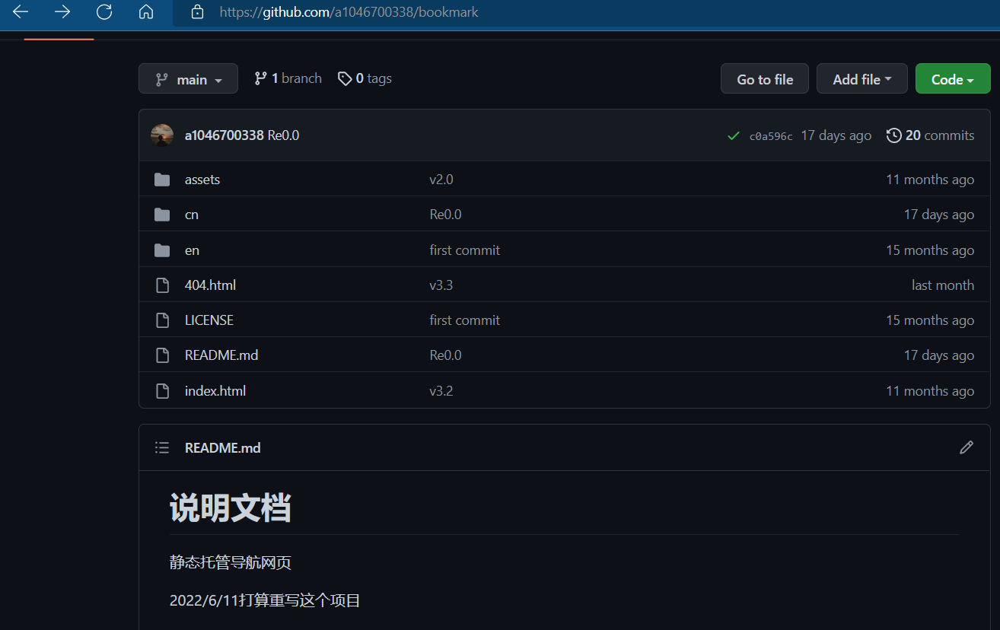

关于网站
你是否也和我一样正头疼浏览器的收藏栏网页收藏得越来越多，很难找到某个不常用的网站。
当初在GitHub上看见了一些开源的导航网站，我深受启发。
我将一些常用的网站写在我的盒子里，点击盒子就能跳转到目的，非常方便，这里收集的基本都是我自己浏览器收藏夹里的网站
还记得这个项目吗
现在你看到的是这个项目重构后的面貌
✨你所看到的是一个崭新的网站！✨
这个网站有无穷的潜力！
这个网站会慢慢成长~
未来
- 渐进式地
- 开源的
众所周知，vue是渐进式的框架，我的网站也是“渐进式”的，通过Git版本管理，不断迭代网站版本（随着本人技术的增长）
本网站开放源代码，遵守 CC BY-NC-SA 4.0 协议，网站源码请访问GitHub